glTF Viewer and asset compression¶
Compressonator GUI application now supports glTF V2.0 file formats for viewing and processing. (Note: The CLI application does not support processing these files and will be updated in future revisions)
In order to use this feature the current V2.7 release requires DX12 compatable HW and Drivers as well as Win10 RS2 or later.
You can check if your system fulfills this requirement by running DirectX Diagnostic Tool (or dxdiag.exe) and refer to Win10 OS build 15063.xxx or later / Win 10 Version 1703 or later. Future releases will add support for OpenGL.
You can check by running windows dxdiag.exe on your system and check that it matches what is highlighted below.
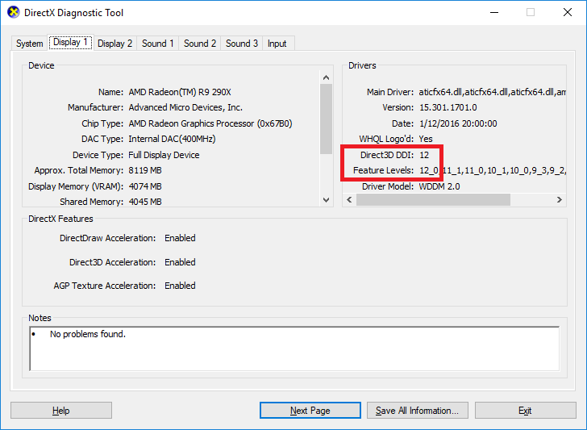
To use this feature,
*Step 1*: simply open a model with .gltf extension or drag and drop the file from a file explorer to the GUI Projects Tree view panel as shown below. The following steps is using the sample glTF file (SciFiHelmet.gltf) downloaded from https://github.com/KhronosGroup/glTF-Sample-Models/tree/master/2.0/SciFiHelmet
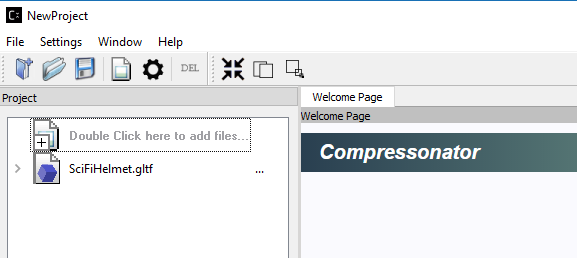
Now that we have a .gltf source we can now add any number of new .gltf files to use for processing.
*Step 2*: Clicking on (>) shows additional setting
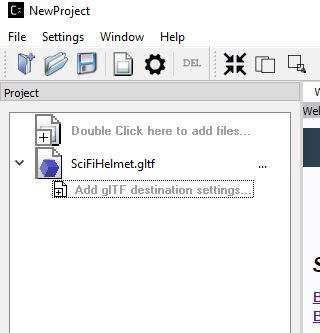
Double click on “Add gtTF destination settings” to allow copying the original file to a new file for further processing. A Destination Setting window will pop up as shown as below, this set up is used to preserve the original file settings and allow users to change only copies of it:
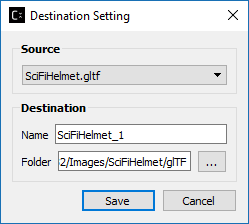
On this new settings dialog, you can change the default destination file name and folder then save
*Step 3*: The project tree will now display the copied gltf file. This copy still refers to the original sources images, cloud point data, meshes etc…
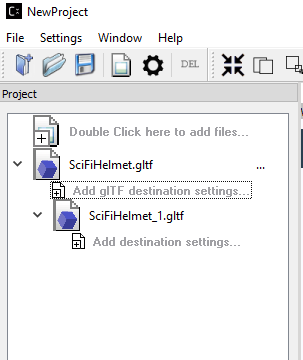
To view the 3D model simply click on the item or its icon, the 3D model view will show up in the viewer panel as shown below:

Note that the properties view has also been updated as shown above.
The 3D model view can be rotated and tilted by left mouse click and move on the view. To scale, use the mouse wheel in or out.
Note: By design all 3D views from any source are synced with mouse moves and scale. To reset the views back to origin, click on the right mouse button.
*Step 4*: Now that we have a copy of the original we are ready to change the source assets to use compression.
Clicking on (>) of the newly added glTF file to show additional setting. Double click on “Add Destination Settings.” To show the Destination Settings Dialog as shown below:
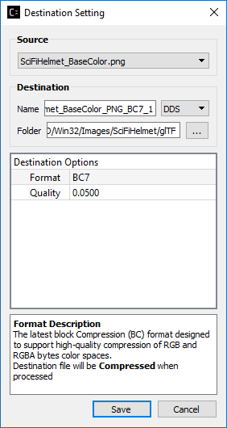
The Source drop down list will show all the files that are available for compression in the selected model.
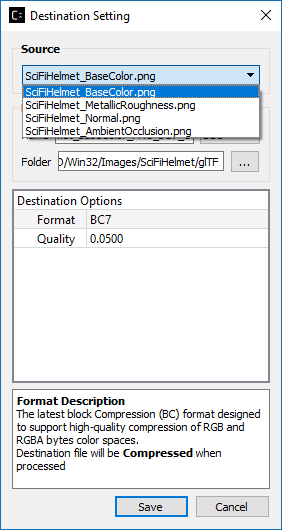
Select the source file, then set its destination and compression settings.
Select save to mark the content of the gltf file “SciFiHelmet_1.gltf” to reference the new destination file.
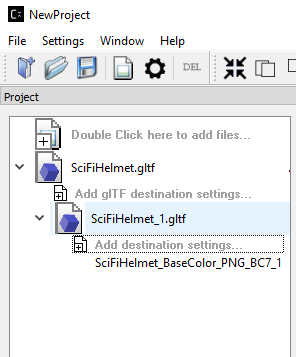
(Note since we have not yet processed the new compression settings the contents of the copy have not been updated. It will only update when the settings have been processed without any errors.)
*Step 5*: You can repeat “Step 4” process of “Add Destination Settings for all or any number of the remaining texture files that are not previously selected. Note that the Source drop down list in the Destination Setting dialog will get smaller each time a file is selected for processing as we only allow one format to be selected for each texture within the glTF file. If you would like to try out different format on the specific texture, please repeat Step 2 to 4.
*Step 6*: Right click on the tree item to process the new settings
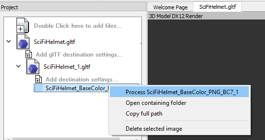
or select the process all icon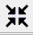 on the tool bar.
*Step 7*: Once the process is complete and successful a new green icon will be displayed. At this point the SciFiHelmet_1.gltf file reference to the new destination file SciFiHelmet_BaseColor_PNG_BC7_1.dds file will be updated.
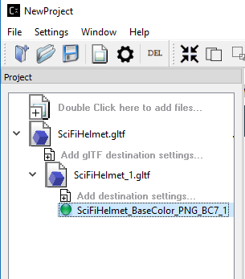
Vulkan® Viewer [ Alpha Code ] (Windows OS Only)¶
Allows viewing glTF files with textures. Currently features for “3d Model Diff” and “Stats” window are disabled.

glTF 3D Model Diff¶
To view a 3D model diff, select the model copy “SciFiHelmet_1.gltf” and right mouse click on it. A new menu will display showing “View 3DModel Diff”
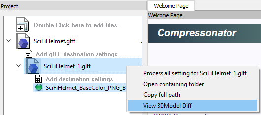
Once selected and after a few seconds of processing time. You will see the 3D Model image diff rendering of the original 3D model “SciFiHelmet.gltf” and it’s Compressed Version “SciFiHelmet_1.gltf” alongside an animated render of both on the same view panel.
DirectX® 3D Model Diff View Modes¶
This feature allows the user to select a manual override of the automated difference view of two rendered models. The Auto View switches render frames at a predetermined rate after two render cycles of each model view, the Manual View allows the users to manually switch view using the keyboards space bar.
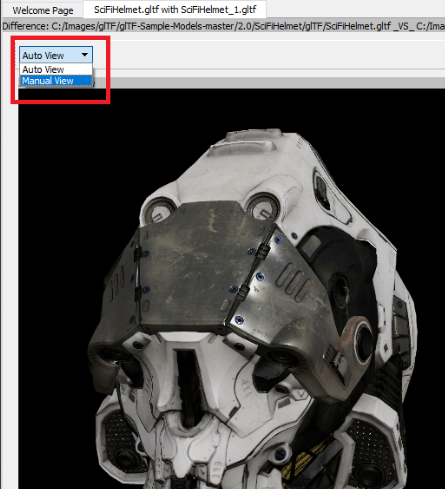
3D Mesh Optimization and/or Mesh Compression¶
Add 3D model file into Project Explorer by “Double click here to add files…” (recommended) or drag and drop into the Project Explorer. After that, click on the right arrow next to the model file added to expand the clickable “Add model destination settings…” view. Click on “Add model destination settings…” and click Save to add a resulted model file node as 2nd level of the Project Explorer tree view.
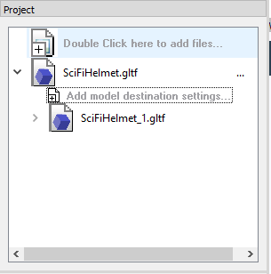
Note that you can add multiple 2nd level output node to the Project Explorer tree.
After that, expand the 2nd level output node (SciFiHelmet_1.gltf) by clicking on the right arrow next to the node and you will see the clickable “Add destination settings…”, click on “Add destination settings…”, Destination Option window will pop up and select a “Source” which are mesh (it will be a .bin file for glTF model and .obj file itself for obj model). The Destination Option window will be shown as below:
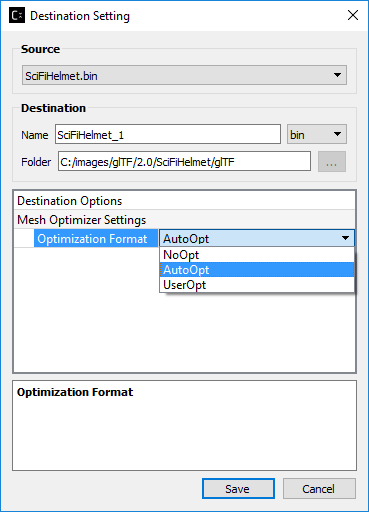
By default, “AutoOpt” is selected, which will perform the best optimization setting for the Model, you can override this setting by selecting “UserOpt” and set accordingly as described below.
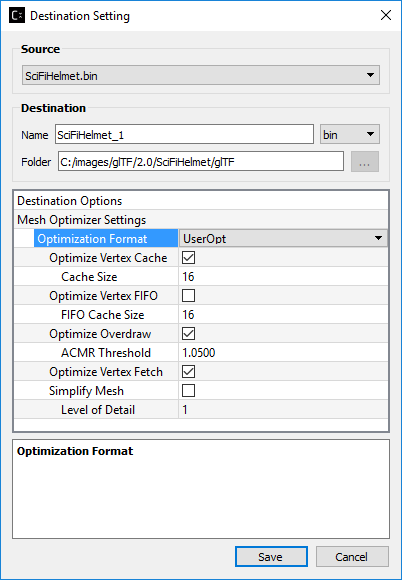
Mesh Optimizer Settings for “UserOpt” selection¶
Optimize Vertex Cache¶
Optimize the cache utilization with LRU (least recently use) cache replacement policy.
Cache Size¶
Specifies the hardware vertex cache size for vertex cache optimization. This cache size refers to GPU built-in fixed size cache that store transformed vertices.
Optimize Vertex FIFO¶
Optimize the cache utilization with FIFO (first in first out) cache replacement policy.
FIFO Cache Size¶
Specifies the hardware vertex cache size for FIFO vertex cache optimization. This cache size refers to GPU built-in fixed size cache that store transformed vertices.
Optimize Overdraw¶
Reduce overdraw by reorder the triangles to render possible occludes first. Recommended to perform overdraw after vertex optimization if optimize vertex cache is checked. Overdraw optimization tries to maintain a balance with vertex cache optimization using the input ACMR Threshold.
ACMR Threshold¶
Average Cache Miss Ratio = #transformed vertices/#triangles (lower mean better vertex cache optimization). This is used for overdraw optimization process to make sure the overdraw optimization does not compromise vertex cache optimization. By default, it is set t0 1.05 (means resulting ratio at most 5% worse). Set to 3 to force overdraw optimization perform sorting on all triangles.
Optimize Vertex Fetch¶
Reduce overfetch from vertex buffer. This process will be performed after optimizing overdraw if optimize overdraw is enabled.
Simplify Mesh¶
Simplify the mesh by using 70% of the original index count and perform edge collapse algorithm using quadric and quadric error calculation. The target index count depends on the level of detail set by the user.
Level of Detail¶
Used in simplify mesh. Each level will use 70% of the index count on previous level. The higher the level, the less detail appear on the resulted mesh.
Mesh Compression Settings selection¶
As of v4.2 this option has been disabled.
When selected it will perform mesh compression using Draco encoder lib.
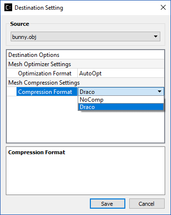
Click “Save” after completing the mesh optimizer and/or mesh compression settings. You will see a 3rd level destination settings node added to the Project Explorer as shown below:
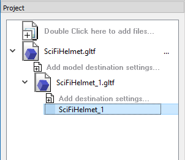
Right click on the 3rd level destination settings node and select “Process <node name>” as shown below:
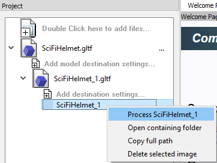
A green circle will appear beside the destination settings node after mesh optimization and/or compression completed.
Analyzing Mesh¶
Mesh analysis can be performed on the original model file as well as the resulted model file ( 1st and 2nd level items in the tree view of Project Explorer). Only .gltf and .obj files are supported for mesh analysis.
After adding the model file to the Project Explorer, right click on the file and select “Analyse Mesh Data” from the context menu:
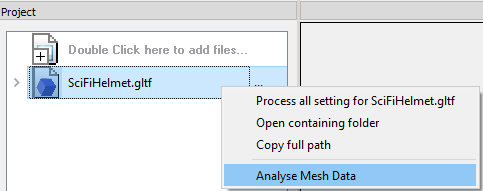
A 3D Mesh Analysis window will pop up as shown below:
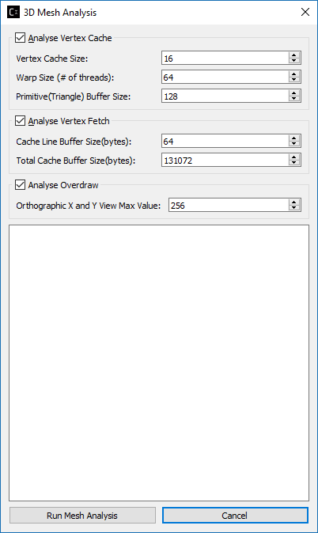
Analysis Vertex Cache¶
Vertex Cache Size¶
This is used to analyze vertex cache optimization. The vertex cache should be set to match mesh optimizer vertex cache size. Usually range between 16-32.
Warp Size (# of threads)¶
Number of threads per wave front group in GPU scheduling. 64 by default.
Primitive Buffer Size¶
Triangle group size. Default is set to 128.
Analysis Vertex Fetch¶
Cache Line Buffer Size(bytes)¶
This is the cache line buffer size which can be retrieved by running clinfo.exe in the window system. Default is set to 64.
Total Cache Buffer Size(bytes)¶
This is the total cache buffer size which can be retrieved by running clinfo.exe in the window system. Default is set to 128*1024.
Analysis Overdraw¶
Orthographic X and Y View Max Value¶
Overdraw statistic is calculated from different orthographic camera view start from 0. This set the maximum of X and Y viewport. Default is set to 256.
After done setting the desired mesh analysis settings, click “Run Mesh Analysis”, if you run mesh analysis from the source model file (1st level tree item), the window will be updated with text output as shown below:
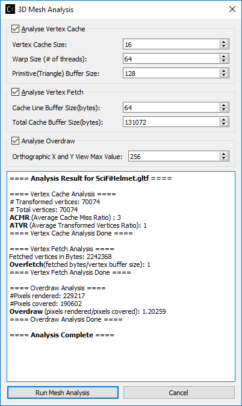
If you run mesh analysis from the resulted model file (2nd level tree item), the window is updated with both resulted model file analysis result as well as the original model file analysis result as shown below:
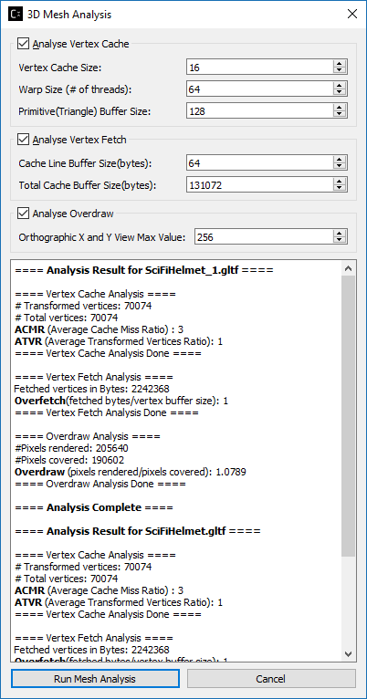
This is essential for users to compare between original and processed model file mesh analysis.
Mesh Statistic¶
ACMR (Average Cache Miss Ratio)¶
ACMR = #transformed vertices/#triangles. The average number of cache miss per triangle is 0.5 in optimum case and 3.0 in worst case. Lower mean better vertex cache optimization.
ATVR (Average Transform Vertices Ratio)¶
ATVR = #transformed vertices / vertex count. The optimum case is 1.0, worst case is 6.0. Lower mean better vertex cache optimization.
Overdraw¶
Overdraw = #pixels shaded/total pixels covered. The best case is 1.0 (each pixel is shaded once)
Overfetch¶
Overfetch = #bytes read from vertex buffer/total # bytes in vertex buffer. The best case is 1.0 (each byte is fetched once)
Note: As mesh processing is model dependent. These mesh statistics shown in mesh analysis can be used as a guideline to produce better mesh using the Mesh Optimizer Settings.